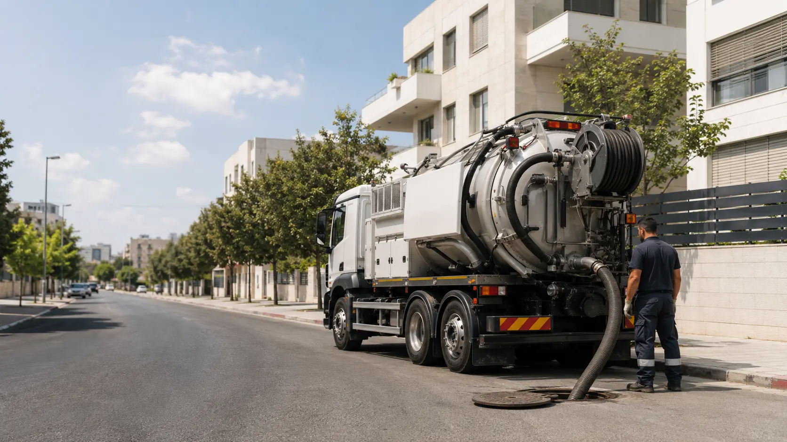

שירות מקומי לבתים, בניינים ועסקים
שילוב של בניינים ותיקים, מגדלים, מסחר וחניונים עם מגבלות גובה וגישה.
לפני תיאום ביובית ברמת גן, נבקש להבין מה קורה, היכן נמצא פתח הביוב והאם קיימת מגבלת גובה, חניה או מרחק. המידע עוזר לבחור בין משאית ביובית, ציוד נייד, שטיפה בלחץ או צילום קו.
בבניין משותף חשוב לבדוק אם התקלה מופיעה בנקודה אחת או בכמה דירות. בעסק או במסעדה חשוב לציין אם מדובר בבור שומן, קו ניקוז או הצפה שמשבשת פעילות.
מסרו רחוב, מספר וסוג הנכס.
ציינו חניון, שער, מדרגות או מעבר צר.
הצפה, ריח, סתימה או בור מלא.
אפשרו גישה בטוחה לפתח הביוב.
המחיר נקבע לפי סוג העבודה, כמות התכולה, אורך הצינור, מרחק הרכב מהפתח, מגבלות הגישה, הצורך בשטיפה או צילום והזמן הנדרש לביצוע. הערכה ראשונית אינה מחליפה בדיקה בפועל.
טיפ: תמונה של פתח הביוב, החניה והגישה יכולה לעזור בהיערכות, כל עוד ניתן לצלם בבטחה ומבלי לחשוף מידע אישי שאינו נחוץ.
ספרו לנו מה קורה בשטח ונעזור להבין איזה שירות מתאים.
הערכה ראשונית ללא עלות וללא התחייבות